Intro to TileMill
An online cartography tool
Presentation by Matthew Cengia@mattcen
https://mattcen.github.io/intro-to-tilemill
Adapted from http://resbaz3.researchmaps.net and http://resbaz4.researchmaps.net by Steve Bennett (@stevage1)
Who am I
- Computer Scientist
- Linux Systems Adminstrator/Developer
- Playing with Linux and open source since 2005
- Cyber IT Solutions (cyber.com.au)
- Computers in Prisons (PrisonPC.com)
- Scout Leader
- Mapping Hobbyist
- Open Knowledge Australia ambassador (au.okfn.org)
Assumed knowledge
- Computer power users
- Basic programming
- Basic HTML/CSS web design
Resources
- http://researchmaps.net
- Web search "TileMill documentation"
- Each other; help each other out
Why maps?
- Engaging
- Colourful
- Draw attention
- Quick context
Why TileMill?
- Map = data + cartography
- TileMill does cartography
What TileMill is not
TileMill doesn't create or edit data; that needs to be done elsewhere; TileMill just displays itTileMill →
Mapbox Studio Classic →
MapBox Studio
| TileMill | reliable, solid, familiar, raster tiles |
| Mapbox Studio Classic | slightly flaky, not as well supported, vector tiles |
| Mapbox Studio | exciting, new, not ready (in private beta), all GUI? |
Dots on a map
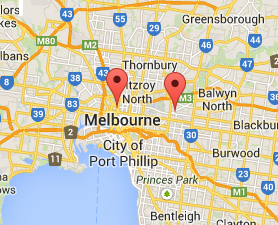Map making
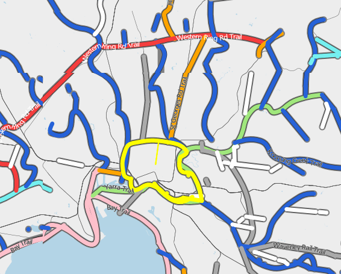

Better for biking
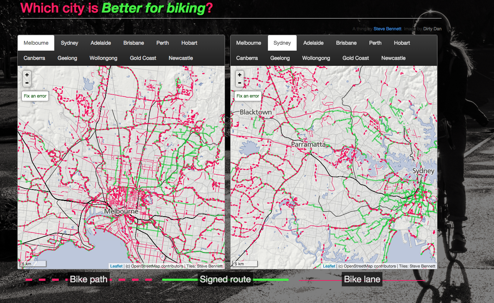Where should I live?
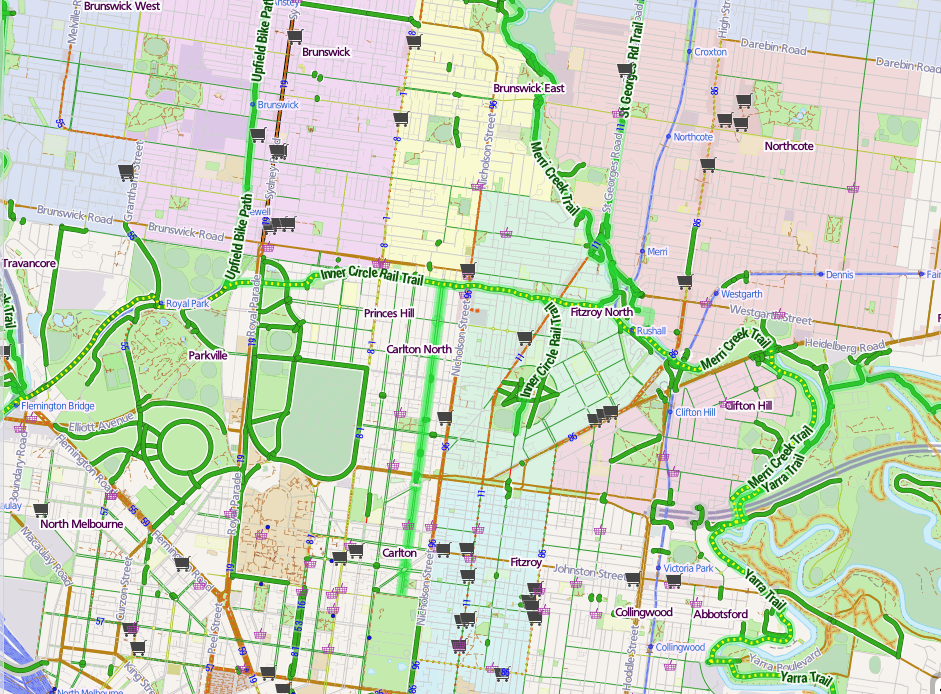Pubgain
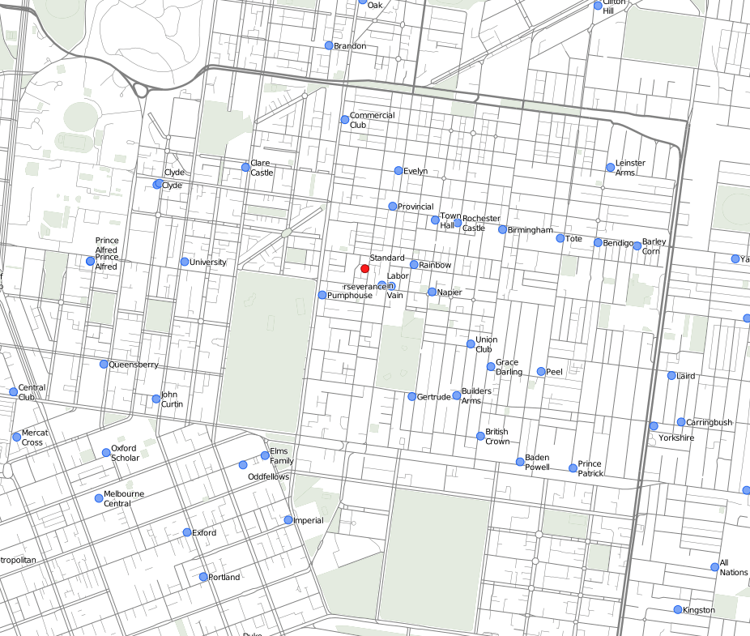Learning Objectives
By the end of this workshop, you will be able to:- display data (points+labels) on a map.
- create a map style to suit your research.
- make a map from your own data (maybe)
- know where to go to learn more
TileMill on the web
http://cc8.researchmaps.netUsername:
tmPassword:
REDACTEDFor those following along at home
Steve Bennett has written a TileMill installer for Ubuntu Trusty (14.04): https://github.com/stevage/saltymillPart I
CartoCSS
Lesson: Simple Styling Instructions
CartoCSS tells TileMill what to do with your data, and is modelled off CSS.Rivers
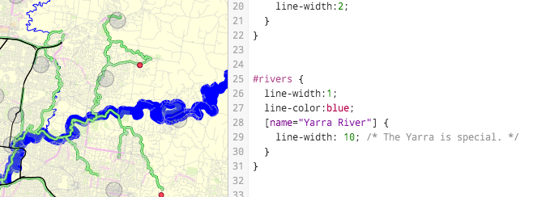Exercise
Open "Table x" projectChange the colour of #bigroads 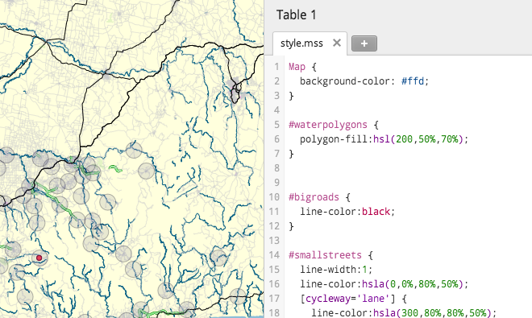
The most important button
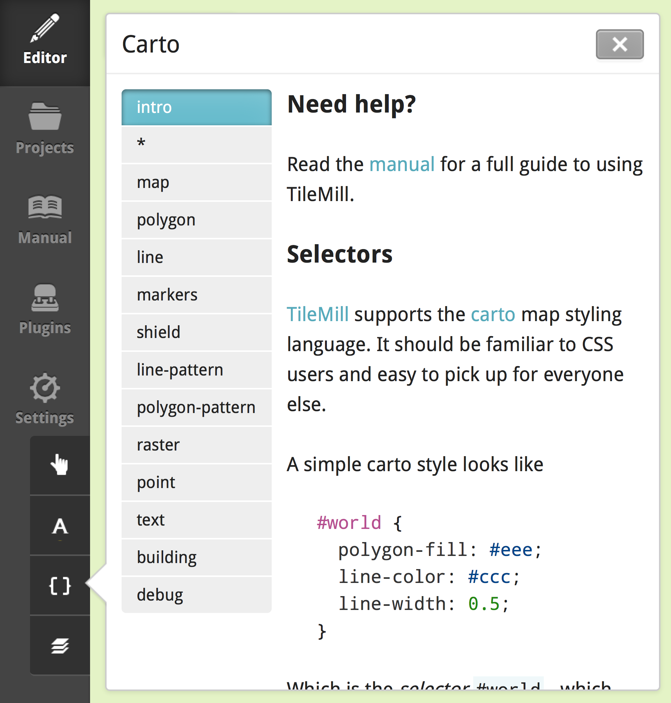The most important key: <Tab>
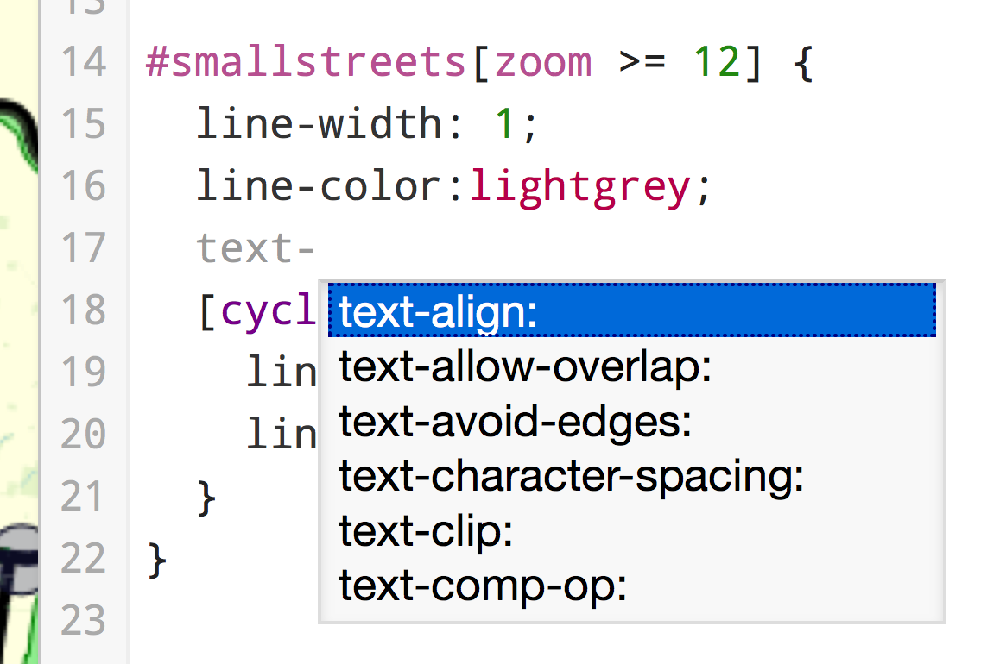Exercise
Make bike paths dashed (--------)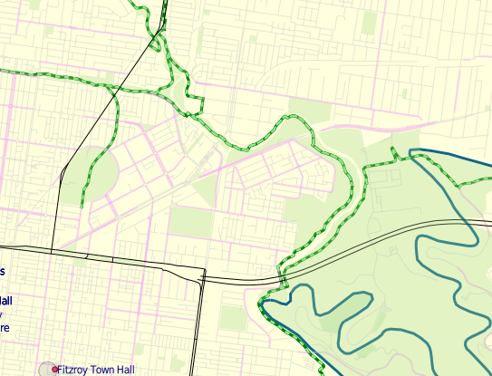
How? Use the { } button. Use Tab.
TileMill layers
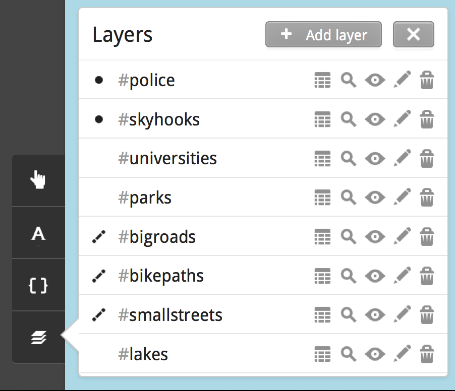Referencing map layers
Each TileMill map layer must have:- An ID (identifier), which can be referenced in CartoCSS with a prefixed hash (#)
- An optional class, which can be referenced in CartoCSS with a prefixed dot (.)
These are used to apply styles to each map layer and its components.
Style name must match layer name
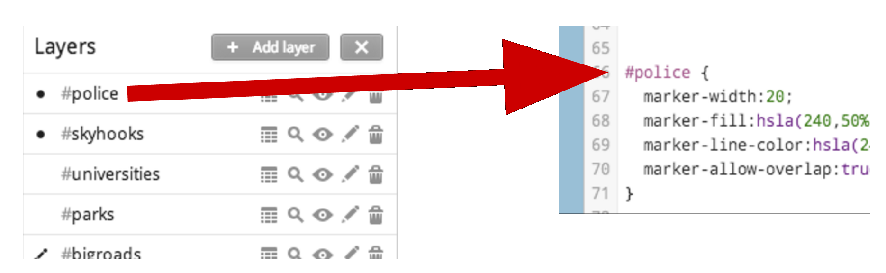Exercise
| Hide the rivers | 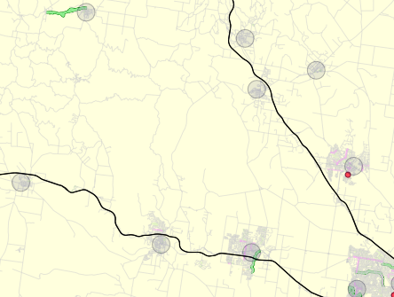 |
| Move the bike paths layer over big roads | 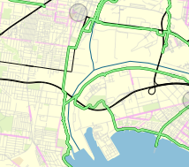 |
Quick Tips
| Ctrl+Z | Undo |
| Ctrl+S | Save |
CartoCSS Syntax
polygon-fill: blue; /* Styles end in semicolons */
#bigroads { ... } /* Rules have matched braces { } */
"hello" 'goodbye' /* Text strings look like this */
/* has no effect */ /* Comments look like this */
Exercise
How many mistakes can you find? 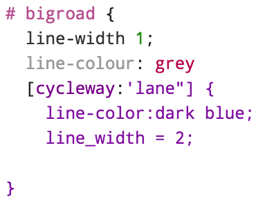Types of map data
| Points |
Single pair of coordinates (lat/long) Eg: villages, murder locations |
| Lines |
Sequence of points in order Eg: roads, voyages |
| Polygons |
Line forming a closed shape Eg: lakes, area of bushfire |
Exercise
Identify each layer as either points, lines or polygons.Types of cartographic elements
| Markers |
|
| Boundaries/Lines |
|
| Polygon areas |
|
| Labels |
|
Customizing other elements
Opacity (of anything)Width (of lines)
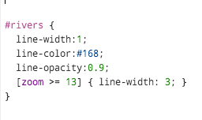
Exercise
Style universities as follows:- White inside
- Blue border
- Shown underneath all other elements
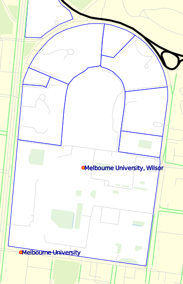
Colours
Best method: HSL (Hue, saturation, luminosity)hsl(60, 80%, 50%)Hue (° around a circle)
0° 60° 120° 180° 240° 300° 360°
Saturation: 0% = grey, 100% = intense colour
Luminosity: 10% = very dark, 50% = full colour, 90% = pale
Other methods:
#FF0000
rgb(0, 255, 0)
Orange
DarkGrey
LightGoldenRodYellow
HSL makes coordinated colours
|
hsl(20, 50%, 20%); hsl(20, 50%, 40%); hsl(20, 50%, 60%); ... |
hsl(200, 0%, 40%); hsl(200, 20%, 40%); hsl(200, 40%, 40%); hsl(200, 60%, 40%); ... |
hsl(0, 80%, 60%); hsl(80, 80%, 60%); hsl(120, 80%, 60%); ... |
| 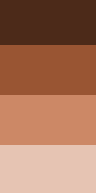 | 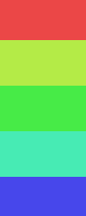 |
Exercise
Make your map attractive with coordinated colours. 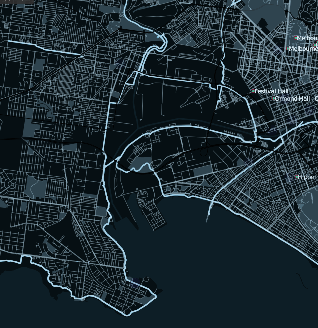Text Labels
text-name: [streetname]; /* Which text to show */
text-face-name: 'DejaVu Sans Bold'; /* Which typeface to use */
text-size: 12; /* What font-size, in pixels */
text-halo-radius: 2; /* Size of text border */
text-halo-fill: white; /* Colour of text border */
text-placement:line; /* Labels along paths */
Exercise
Add text labels to universities 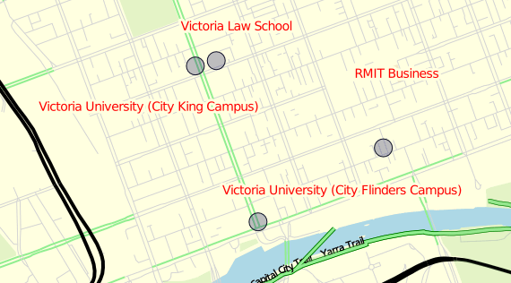Sublayers
TileMill can style the same symbols multiple times.To draw a border, draw the outside wide, and the inside narrow
::border- (default sub-layer)
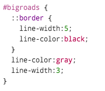
Exercise
Give #bigroads a black border, yellow fill, and black dashes inside.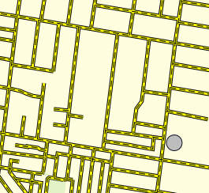
Carpet
A carpet is the equivalent of a halo for lines; it makes the line really stand out against the background.This is done by giving a line a border the same colour as the map background.
Exercise
Make a carpet that looks like this: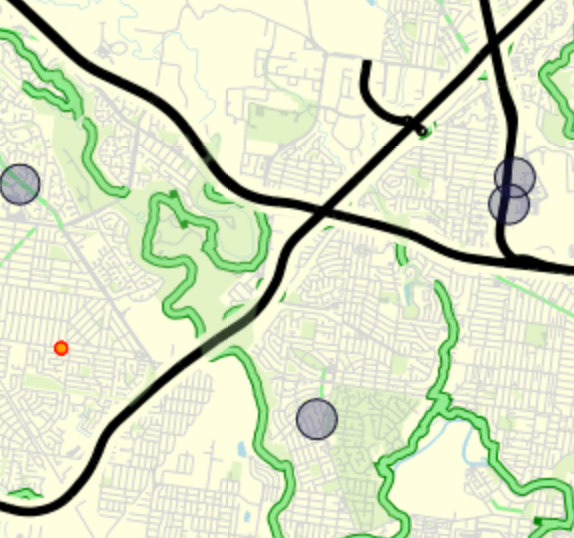
Exercise
Work out what each layer button does.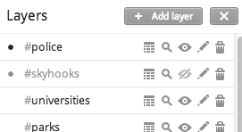
Exercise
Add a layer (The Local Government Areas)http://gis.researchmaps.net/sample/lga.zip
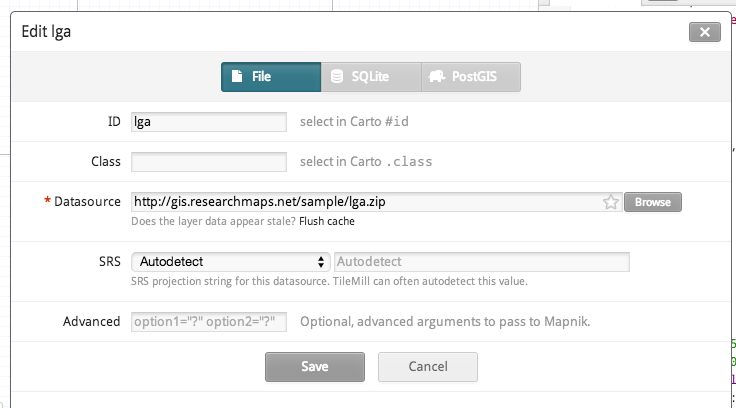
Exercise
Add the pubshttp://gis.researchmaps.net/sample/pubs.geojson
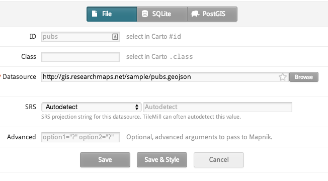
Considerations for styling your map
Map purpose
- What is the map trying to communicate?
- What is the map's story?
Map audience
- Who will use the map?
- What are their needs?
Map medium
- How will the map be delivered and/or viewed?
- Considerations for print/screen

Intro to TileMIll by Matthew Cengia is licensed under a Creative Commons Attribution-ShareAlike 4.0 International License.
https://github.com/mattcen/intro-to-tilemill
This presentation written in reveal.js
They have an example presentation here